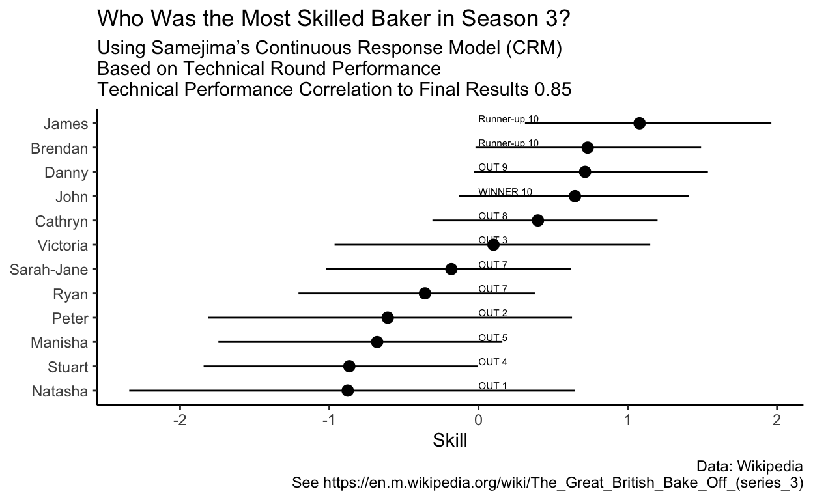

Are the technical challenges which are judged blindly good indcators of if a baker will win overall?
My wife and I love to watch the Great British Bake Off on Netflix. The competion is for the most part collegial in general and all around feel good television, especially at night. After watching several seasons of the show, a lingering question came to mind: how good are the judges at estimating talent?
The format of the show is composed of three rounds; the first and third rounds have themes/genre of baked good that the contestants knew about in advance and could decide (and practice) what they wanted to make. The second/middle round is composed of a “technical” challenge where the bakers have all given the same ingrediants and instructions and asked to make something of which they had no prior knowledge. Unlike the other rounds, the judges judge each bake blindly in the technical (and of course the contestants make the same dish).
This set-up is perfect for understanding how well the judges can estimate “ability” to use a psychometric term. Because we have contestants facing the same exact challenge and being judged blindly, we can use pyschometric tools to judge the “ability” of the baker and the “difficulty” of the challenge. There is a lot of noise on these measures due to the fact that contestants are eliminated after each show meaning that they do not get a chance at each challenge, but it will give a little bit of insight the ability of the bakers. We can then compare the outcomes of each round with the judged “technical” ability.
High stakes tests like the GRE and GMAT use something called Item Response Theory (IRT) to measure “ability.” The tests work by matching item difficulty (or how hard a question is) to the test-taker’s latent ability (tendency to get the right answer). Test takers should get the correct answer for those items where their ability is greater than the item difficulty, should get those items wrong where the difficulty is greater than their ability, and some distribution due to the measurement error in both ability and difficulty.
The key contribution of IRT over classical test theory (in my opinion) is that there is some latent noise in the test question/item.
IRT typically required a single “correct” answer. When we are looking at the rating of Bakers from 1 to N bakers, we need to observe the continuous data of the data. Enter the Continuous Response Models which allow us to use the principles of IRT for continuous data. In particular we will use Samejima’s continuous response model for the ranking of contestants.
So now we can lay out our analysis plan:
The first part in this analysis is getting the data. Luckily, Wikipedia, the grandest resource on the interweb, provides these data in a regular pattern.
First, we will load the usual suite of packages for webscraping and analysis.
To run an initial test, I am just going to pull Season 3.
url <- "https://en.m.wikipedia.org/wiki/The_Great_British_Bake_Off_(series_3)"
content <- read_html(url)
tables <- content %>% html_table(fill = TRUE)
We can see that there are 15 available. The second table gives us the biographies of the contestants:
knitr::kable(tables[[2]])
| Baker | Age | Occupation | Hometown | Links |
|---|---|---|---|---|
| Brendan Lynch | 63 | Recruitment consultant | Sutton Coldfield | [4] |
| Cathryn Dresser | 27 | Shop assistant | Pease Pottage, West Sussex | [5] |
| Danny Bryden | 45 | Intensive care consultant | Sheffield | [6] |
| James Morton | 21 | Medical student | Hillswick, Shetland Islands | [7] |
| John Whaite | 22 | Law student | Wigan | [8] |
| Manisha Parmar | 27 | Nursery nurse | Leicester | |
| Natasha Stringer | 36 | Midwife | Tamworth, Staffordshire | |
| Peter Maloney | 43 | Sales manager | Windsor, Berkshire | |
| Ryan Chong | 38 | Photographer | Bristol | [9] |
| Sarah-Jane Willis | 28 | Vicar’s wife | Bewbush, West Sussex | [5] |
| Stuart Marston-Smith | 26 | PE teacher | Lichfield, Staffordshire | [10] |
| Victoria Chester | 50 | CEO of the charity Plantlife | Somerset | [11] |
With a little bit of work, we can turn the third table into a nice representation of the results.
tables[[3]] %>%
as.data.table() %>%
.[-1,1:11] %>%
setNames(c("baker", sprintf("%s",1:10))) %>%
melt(id.vars = "baker") %>%
.[,round_num:=as.numeric(variable)] %>%
filter(!value %in% c("", "SB")) %>%
mutate(perf = sprintf("%s %s", value, round_num))->performance
knitr::kable(performance)
| baker | variable | value | round_num | perf |
|---|---|---|---|---|
| Natasha | 1 | OUT | 1 | OUT 1 |
| Peter | 2 | OUT | 2 | OUT 2 |
| Victoria | 3 | OUT | 3 | OUT 3 |
| Stuart | 4 | OUT | 4 | OUT 4 |
| Manisha | 5 | OUT | 5 | OUT 5 |
| Ryan | 7 | OUT | 7 | OUT 7 |
| Sarah-Jane | 7 | OUT | 7 | OUT 7 |
| Cathryn | 8 | OUT | 8 | OUT 8 |
| Danny | 9 | OUT | 9 | OUT 9 |
| John | 10 | WINNER | 10 | WINNER 10 |
| Brendan | 10 | Runner-up | 10 | Runner-up 10 |
| James | 10 | Runner-up | 10 | Runner-up 10 |
Now the more challenging part is to parse all of the results. I am going to use some loops and index variables because I can’t think of a more expediant way to do it.
Importantly, each baker will appear for as many challenges in which they participated. This means someone who was eliminated after the first show will only have one record (enter measurement error) and those who participated in later rounds will appear multiple times.
technicals <- list()
z <- 1
for(i in seq_along(tables)){
x <- tables[[i]]
interesting <- grepl(pattern = "Baker|Technical", names(x))
if(sum(interesting)<2){
next()
}
y <- x[,interesting]
names(y) <- c("baker", "technical")
y$technical_no <- z
technicals[[i]] <- y
z <- 1+z
}
out_long<- do.call(rbind, technicals)
setDT(out_long)
knitr::kable(head(out_long,10))
| baker | technical | technical_no |
|---|---|---|
| Brendan | 10th | 1 |
| Cathryn | 5th | 1 |
| Danny | 7th | 1 |
| James | 2nd | 1 |
| John | 11th | 1 |
| Manisha | 6th | 1 |
| Natasha | 12th | 1 |
| Peter | 3rd | 1 |
| Ryan | 8th | 1 |
| Sarah-Jane | 1st | 1 |
Now with a little nore parsing we can extract the result and associated rank of the bakers.
out_long[,rank := as.numeric(stringr::str_extract(technical, "\\d+"))]
out_long[,rank_ordered:=12 - rank]
out_long[,baker_id := as.integer(as.factor(baker))]
knitr::kable(head(out_long,10))
| baker | technical | technical_no | rank | rank_ordered | baker_id |
|---|---|---|---|---|---|
| Brendan | 10th | 1 | 10 | 2 | 1 |
| Cathryn | 5th | 1 | 5 | 7 | 2 |
| Danny | 7th | 1 | 7 | 5 | 3 |
| James | 2nd | 1 | 2 | 10 | 4 |
| John | 11th | 1 | 11 | 1 | 5 |
| Manisha | 6th | 1 | 6 | 6 | 6 |
| Natasha | 12th | 1 | 12 | 0 | 7 |
| Peter | 3rd | 1 | 3 | 9 | 8 |
| Ryan | 8th | 1 | 8 | 4 | 9 |
| Sarah-Jane | 1st | 1 | 1 | 11 | 10 |
In completely transparency, I utilized code from https://cengiz.me/posts/crm-stan/ which provided an excellent starting point for the analysis.
The code is lightly modified (just to tighten some priors) because of the
writeLines(readLines("irt.stan"))
// From https://cengiz.me/posts/crm-stan/
data{
int J; // number of items
int I; // number of individuals
int N; // number of observed responses
int item[N]; // item id
int id[N]; // person id
real Y[N]; // vector of transformed outcome
}
parameters {
vector[J] b; // vector of b parameters forJ items
real mu_b; // mean of the b parameters
real<lower=0> sigma_b; // standard dev. of the b parameters
vector<lower=0>[J] a; // vector of a parameters for J items
real mu_a; // mean of the a parameters
real<lower=0> sigma_a; // standard deviation of the a parameters
vector<lower=0>[J] alpha; // vector of alpha parameters for J items
real mu_alpha; // mean of alpha parameters
real<lower=0> sigma_alpha; // standard deviation of alpha parameters
vector[I] theta; // vector of theta parameters for I individuals
}
model{
mu_b ~ normal(0,5);
sigma_b ~ normal(0,1);
b ~ normal(mu_b,sigma_b);
mu_a ~ normal(0,5);
sigma_a ~ normal(0,2.5);
a ~ normal(mu_a,sigma_a);
mu_alpha ~ normal(0,5);
sigma_alpha ~ cauchy(0,2.5);
alpha ~ normal(mu_alpha,sigma_alpha);
theta ~ normal(0,1); // The mean and variance of theta is fixed to 0 and 1
// for model identification
for(i in 1:N) {
Y[i] ~ normal(alpha[item[i]]*(theta[id[i]]-b[item[i]]),alpha[item[i]]/a[item[i]]);
}
}Now we just compile the model and format our data:
We can then fit the model with our data.
fit <- mod$sample(dat_stan,
parallel_chains = 4,
max_treedepth = 15, adapt_delta = .99, refresh = 0)
Running MCMC with 4 parallel chains...
Chain 2 finished in 24.7 seconds.
Chain 4 finished in 25.4 seconds.
Chain 3 finished in 27.6 seconds.
Chain 1 finished in 29.1 seconds.
All 4 chains finished successfully.
Mean chain execution time: 26.7 seconds.
Total execution time: 29.3 seconds.We’re interested here in theta which represents the ability of the bakers.
combined_out <- fit$summary(variables = "theta") %>%
mutate(baker_id = as.numeric(stringr::str_extract(variable, "\\d+"))) %>%
left_join(baker_list)
out_come_with_rank <- combined_out %>%
arrange(desc(median)) %>%
mutate(outcome_modelled = row_number()) %>%
select(outcome_modelled, baker) %>%
left_join(performance) %>%
mutate(outcome_realized = case_when(
value == "Runner-up"~2,
value == "WINNER"~1,
TRUE~13-round_num
))
knitr::kable(out_come_with_rank)
| outcome_modelled | baker | variable | value | round_num | perf | outcome_realized |
|---|---|---|---|---|---|---|
| 1 | James | 10 | Runner-up | 10 | Runner-up 10 | 2 |
| 2 | Brendan | 10 | Runner-up | 10 | Runner-up 10 | 2 |
| 3 | Danny | 9 | OUT | 9 | OUT 9 | 4 |
| 4 | John | 10 | WINNER | 10 | WINNER 10 | 1 |
| 5 | Cathryn | 8 | OUT | 8 | OUT 8 | 5 |
| 6 | Victoria | 3 | OUT | 3 | OUT 3 | 10 |
| 7 | Sarah-Jane | 7 | OUT | 7 | OUT 7 | 6 |
| 8 | Ryan | 7 | OUT | 7 | OUT 7 | 6 |
| 9 | Peter | 2 | OUT | 2 | OUT 2 | 11 |
| 10 | Manisha | 5 | OUT | 5 | OUT 5 | 8 |
| 11 | Stuart | 4 | OUT | 4 | OUT 4 | 9 |
| 12 | Natasha | 1 | OUT | 1 | OUT 1 | 12 |
Now we can see what the correlation of ability performance is:
[1] 0.85Not too bad! It would seem that there is evidence that the performance in the technical is correlated with the final result (thank goodness).
combined_out %>%
ggplot(aes(reorder(baker,median), median))+
geom_pointrange(aes(ymin = q5, ymax =q95))+
geom_point()+
coord_flip()+
theme_classic() +
geom_text(data = performance,
aes(x = baker, y = 0,
label = perf), inherit.aes = FALSE,
hjust = 0,nudge_x = .2 , size = 2)+
labs(
title = "Who Was the Most Skilled Baker in Season 3?",
subtitle = glue::glue("Using Samejima’s Continuous Response Model (CRM)\nBased on Technical Round Performance\nTechnical Performance Correlation to Final Results {correlation_analysis}"),
caption = glue::glue("Data: Wikipedia\n See {url}"),
x = NULL,
y = "Skill"
) ->p
p

out_come_with_rank %>%
select(baker,outcome_modelled,outcome_realized) %>%
mutate(color_use= ifelse(outcome_modelled >outcome_realized,
"Better than Skill", "Worse than Skill")) %>%
ggplot(aes(y = reorder(baker, outcome_modelled)))+
geom_point(aes(x = outcome_modelled), color = "orange")+
geom_point(aes(x = outcome_realized), color = "blue")+
geom_segment(aes(x = outcome_modelled,
xend = outcome_realized, yend = baker,
color = color_use))+
theme_classic()+
labs(
title = "Comparison Between Outcome and Modelled Skill",
color = "Outcome",
y = NULL,
x = "Rank"
)+
scale_color_manual(values = c("green", "red"))+
scale_x_continuous(breaks = seq(1,12,1))->p2
p2
This analysis only covers one season. It would be neat to come back and do all of the seasons to get a feel for the level of difficulty of the different rounds (i.e., was the technical in round 3 of similar difficulty in each season). Additionally it would be neat to see if this relationship between the technical score and final outcome held up in each season.